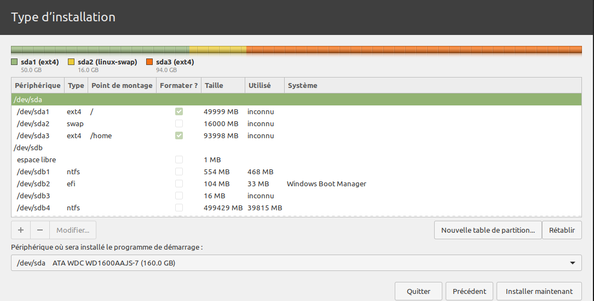

Objectifs pédagogiques
Les principaux objectifs de ce sujet de travaux pratiques sont :
- d'apprendre à installer sur un poste de travail à système Windows un deuxième système d'exploitation de type Linux pour obtenir une machine dite à « double boot » ;
- de découvrir ce faisant divers aspects des machines – disques durs et partitions, image système, clef USB de démarrage… ;
- de configurer le bureau en vue d'une utilisation professionnelle pour le développement informatique (programmation, réseau, etc.).
Pour effectuer toutes les manipulations demandées, seuls des connaissances générales d'informatique sont requises. Aucune étude préalable des chapitres du module n'est nécessaire.
Mise en situation
Le système à installer est la distribution Linux Mint W avec le bureau Cinnamon W. Ce choix est principalement motivé par les similarités que ce bureau présente avec l'interface utilisateur des systèmes Windows :
- la barre de tâche en bas de l'écran par défaut, avec zone d'accès rapide à droite et menu démarrer à gauche ;
- l'explorateur de fichiers avec panneau latéral gauche de navigation ;
- de nombreux utilitaires classiques – moniteur système, table des caractères, calculatrice, capture d'écran – intégrés par défaut.
En outre, la prise en main de Linux Mint / Cinnamon est très simple. De nombreux aspects sont contrôlables par interface graphique : installation des logiciels (logithèque), configuration réseau, etc. C'est donc une distribution particulièrement bien adaptée pour des débutants familiers de Windows.
La procédure d'installation proposée est conçue dans le contexte d'une salle de travaux pratiques d'informatique réservée à la STS SNIR au lycée Jules Ferry de Versailles.
- Elle opère sur des postes de travail de type « PC tour » équipés de deux disques durs. Une telle configuration facilite tant l'installation que la gestion de la machine.
- Les postes sont reliés à l'Internet via le réseau du lycée et son serveur proxy académique qui filtre les accès demandés. Ce dernier pose parfois des problèmes de refus d'accès à certains sites de dépôt de composants logiciels.

Cette procédure peut être appliquée dans un autre contexte – notamment pour une installation sur un ordinateur personnel – moyennant des adaptations nécessaires signalées par l'icône ci‑contre. Dans un tel cas, il est vivement recommandé de procéder à une sauvegarde préalable des fichiers sur un disque dur externe ou toute autre solution de secours en cas d'échec.
En complément, on pourra s'appuyer sur la vidéo réalisée par Adrien D. sur sa chaîne YouTube Adrien Linuxtricks Y.
Le travail demandé est à effectuer en binôme sur un seul poste de travail.
Un deuxième poste de travail est mis à disposition uniquement pour lire le sujet et consulter de la documentation en ligne durant toute la procédure, y compris quant le premier poste est en cours d'installation. Mais il ne faut pas intervenir sur le système de ce deuxième poste.
Travail demandé
La procédure d'installation est décrite point par point en détails ci‑après. Sauf imprévu, il n'est pas nécessaire – et même vivement déconseillé – de chercher une solution alternative sur l'Internet.

Mais l'exécution de cette procédure requiert une grande vigilance. Un mauvais choix ou une confusion peut supprimer ou rendre le système Windows du poste de travail inutilisable – avec à la clef la nécessité de racheter une licence pour le réinstaller. Lorsqu'une opération ne donne pas le résultat attendu, ou même simplement en cas de doute, il est vivement recommandé d'appeler l'enseignant et de ne pas improviser une alternative.
- Préparation du disque dur et de la clef de démarrage
- Démarrer le poste de travail. Si ce dernier est déjà installé en double boot, il affiche très rapidement en mode terminal le menu du GRUB – pour GNU GRand Unified Bootloader W.
- En tout premier lieu, pour que le système puisse accéder à l'Internet, il faut vérifier que l'adresse IP du serveur proxy W est bien configurée dans le système. Pour cela :
- Saisir le mot‑clef «
proxy» dans la barre de recherche à côté du menuDémarrer. Sélectionner le 1er choixParamètres du proxy. - Dans la section
Configuration manuelle du proxy, si ce n'est pas déjà fait, activer le proxy et, pour les deux protocoleshttpethttpsrenseigner l'adresse IP10.0.0.1et le nº de port80. - Dans le menu accessible via le « burger‑button » en haut à gauche de la fenêtre du navigateur, choisir la commande
Paramètrespuis tout en bas de la page, cliquer sur le boutonParamètres…. - Choisir la 3e option :
Utiliser les paramètres proxy du système. - Faire un clic‑droit sur le menu
Démarrer(tout en bas à gauche du bureau) et sélectionner la fonctionnalitéGestion des disques. - Récupérer l'image
.isodu système Linux Mint / Cinnamon fournie par l'enseignant sur clef USB (pour minimiser le volume de téléchargement en séance de TP) et la copier sur le disque dur du poste de travail dans le répertoireTéléchargements. - Avec le lecteur USB et la carte MicroSD fournis, créer une clef de démarrage système (bootable) en exécutant la procédure suivante :
- Insérer la carte dans le lecteur puis la brancher sur un port USB 3.0 du poste de travail. Vérifier que son volume apparaît bien dans l'explorateur de fichiers. (Inutile de vider son contenu, elle sera automatiquement formatée durant la procédure.)
- S'il n'y en a pas sur le poste de travail, télécharger et installer un logiciel de gravage de clef de démarrage comme Rufus, disponible au lien suivant .
- sélectionner le périphérique USB sur lequel la clef de démarrage sera gravée, donc le lecteur et sa carte MicroSD fournis.
- sélectionner comme type de démarrage l'image système Linux précédemment obtenue ;
- laisser tous les autres paramètres par défaut, comme indiqué sur la capture d'écran ci‑contre et démarrer la procédure, en acceptant toutes les éventuelles recommandations supplémentaires.
- Démarrage sur clef USB
- Redémarrer la machine avec le lecteur et sa carte MicroSD branchée, tout en effectuant des appuis répétitifs sur la touche
F9du clavier. Cette opération lance le micrologiciel de démarrage appelé UEFI W – unified extensible firmware interface. - Tout à droite sur le tableau de bord du bureau (communément appelé « barre de tâche » sous Windows), cliquer sur l'icône réseau et paramétrer le serveur proxy (cf. supra ) comme indiqué sur la capture d'écran ci‑dessous :
- sélectionner
Settingspour afficher dans un nouvel onglet la page principale de paramétrage ; - tout en bas de cette page, à la rubrique
Network Settings, cliquer sur le boutonSettings; - Vérifier que l'option
Use system proxy settingsest bien sélectionnée, sinon la choisir et valider en cliquant sur la toucheOK. - Installation du système
- Cliquer sur l’icône
Install Linux Mintsituée en haut à gauche sur le bureau, puis suivre la procédure de choix des paramètres régionaux : - pour la langue, choisir le
français; - pour le clavier, choisir
French – French (alt.)bien adaptée à un usage moderne du clavier Azerty 102 touches usuel (ne pas garder l'option « legacy » sélectionnée par défaut) ; - Repérer le disque dur vacant – typiquement identifié par le chemin
/dev/sda, avec une taille de 160, 250 ou 500 Go qui a été libéré à la question 1.b) – et surtout pas celui affecté au système Windows. - La première partition est réservée au système lui‑même et aux logiciels qui seront installés au fur et à mesure de l'utilisation du poste de travail. Elle doit être paramétrée comme indiqué ci‑dessous et conformément à la capture d'écran :
- allouer une taille de 50 000 Mo (soit 50 Go) ;
- garder les options par défaut – à savoir une partition primaire située au début de l'espace, avec un système de fichiers
ext4W ; - attribuer comme point de montage de la partition la racine
/du système de fichiers. - La deuxième partition est réservée pour constituer un espace d'échange W – en anglais, swap – servant pallier une éventuelle insuffisance de la mémoire vive (RAM) du poste de travail en cours d'utilisation intensive (lorsque beaucoup d'applications fonctionnent simultanément). Elle doit être paramétrée comme indiqué ci‑dessous et conformément à la capture d'écran :
- allouer une taille de 16 000 Mo (soit 16 Go) qui est égal à celui de la RAM du poste de travail ;
- définir comme
espace d'échange (« swap »)(un tel volume n'a pas de point de montage puis qu'il n'est pas lié au système de fichiers). - La troisième partition est réservée aux données des utilisateurs (fichiers) du poste de travail. Elle doit être paramétrée comme indiqué ci‑dessous et conformément à la capture d'écran (pour un disque de 160 Go) :
- allouer comme taille tout l'espace restant sur le disque (ce volume pourrait éventuellement être réduit par la suite dans la perspective d'installer encore un autre système) ;
- garder les options par défaut – à savoir une partition primaire située au début de l'espace, avec un système de fichiers
ext4; - attribuer comme point de montage de la partition le répertoire
/homedu système de fichiers. - Après la définition de ces partitions, on doit obtenir un résultat conforme à la capture d’écran ci‑dessous : 
- Vérifier que le périphérique sur lequel sera installé le programme de démarrage – le GRUB – est bien le même disque que celui sur lequel Linux sera installé (typiquement identifié par le chemin
/dev/sda, cf. le bas de la capture d’écran ci‑dessus). - Appeler l'enseignant pour une vérification avant de cliquer sur le bouton
Installer maintenant. - En fait, le paramétrage de l'installation n'est pas tout à fait terminé. Il reste à préciser quelques choix concernant le compte de l'utilisateur par défaut du système (sachant qu'il serait possible par la suite de créer d'autres compte d'utilisateurs).
- Pour la zone horaire W, garder le choix par défaut
Parispuisque le poste de travail est situé en France métropolitaine qui est englobée dans une seule zone horaire – celle d'Europe centrale. - Pour les identifiants de l'utilisateur (cf. la capture d'écran ci‑contre), saisir impérativement :
- comme nom d'utilisateur, le mnémonique
elv(pour « élève ») ; - comme nom d'ordinateur, le code
241-noù le nombre n est le numéro du poste de travail donné par l'enseignant ; - comme mot de passe, exclusivement celui donné par l'enseignant.
- Appeler l'enseignant pour une dernière vérification avant de cliquer sur le bouton
Continuerpour lancer la procédure d'installation. - Cette procédure d'installation n'est pas très longue – quelques minutes – car les postes de travail disposent d'une configuration matérielle satisfaisante et la clef d'installation opère sur un port USB 3.0. Une fois terminée, il suffit de redémarrer le poste.
- Prise en main du système
- Avant tout, il faut encore une fois paramétrer l'interface réseau ; sinon, aucune mise à jour ni téléchargement d'application n'est possible puisque l'accès à l'Internet est empêché.
- En cliquant sur l'icône du gestionnaire de mises à jour – en anglais, update manager – à droite dans le tableau de bord (barre de tâche), effectuer toutes les mises à jours proposées en suivant la procédure ci‑dessous.
- Tout d'abord, il faut choisir un miroir de dépôt local, c'est‑à‑dire d'un pool de serveurs contenant une copie des fichiers de mise à jour originaux, mais situés dans une zone géographique proche du poste de travail. En évitant ainsi de surcharger les routes de l'Internet ainsi que les serveurs principaux de Linux Mint, cela diminue les temps de téléchargement des mises à jour pour l'utilisateur du poste.
- Le gestionnaire peut demander également sa propre mises à jour. Dans ce cas, il faut y procéder en priorité.
- Ensuite, cliquer sur le bouton
Installer les mises à jour. Cette opération prend en général plusieurs minutes. En cliquant sur le boutonAfficher les détails, on peut suivre en temps‑réel la sortie texte de la procédure comme dans un terminal. - En cas d'échec d'une mise à jour, on peut tenter une alternative en saisissant dans un terminal de commandes en lignes :
- Pour un meilleur confort visuel, on opte pour un thème sombre d'apparence du bureau. Pour cela :
- Dans le menu principal (bouton cerclé « Lm » tout à gauche du tableau de bord), sélectionner le bouton
Paramètres systèmes - centre de contrôle(cf. icône ci‑contre). - Dans la fenêtre ainsi ouverte, à la première section
Apparence, cliquer sur le boutonThèmes. - À la rubrique
Applications, remplacer le thèmeMint-YparMint-Y-Dark. L'intérieur de la fenêtre doit alors devenir sombre. - On va maintenant optimiser la présentation de l'explorateur de fichier
Nautilus. Pour cela, commencer par cliquer sur le raccourciFichiersdans le tableau de bord pour ouvrir une fenêtre d'exploration ; dans le menuÉdition, sélectionner la commandePréférences. - Sélectionner la rubrique
Vues, choisir l'optionVue en listespour l'ouverture des nouveaux dossiers et cocher la casehériter le type de vue du parent. - Sélectionner la rubrique
Colonnes de listeset cocher les casesPropriétaireetPermissions. - Sélectionner la rubrique
Barre d'outilset ajouter les boutonsNouveau dossieretOuvrir dans un terminal. - Sélectionner la rubrique
Menus contextuelset cocher la caseCréer un lien. - Pour plus d'efficacité dans l'utilisation du poste de travail, on va installer des raccourcis d'accès à certains accessoires du système.
- Le moniteur système permet d'afficher la liste des processus W en cours d'exécution sur le poste de travail, de suivre en temps‑réel la consommation des ressources (processeur, mémoire, etc.).
- La table de caractères permet de trouver n'importe quel caractère d'une police donnée, de le sélectionner et l'insérer dans un fichier par copier‑coller.
- La capture d'écran permet de générer une image matricielle de tout ou partie de ce qui est affiché sur le moniteur, avec le format
.pngpar défaut. - La calculatrice permet d'effectuer des calculs mathématiques. Elle est proposée avec plusieurs modes de fonctionnement : basique, avancé, programmation, etc.
- Celluloid est un lecteur de fichiers audio et video. Rudimentaire, il présente l'avantage d'être très simple d'emploi.
- le trouver dans le menu principal grâce à la barre de recherche ;
- faire un clic‑droit sur son icône et sélectionner la commande
Ajouter au panneau. - Pour finir, à titre d'exemple, on va installer les deux logiciels d'usage courant listés ci‑dessous.
- Chromium W est un navigateur libre sur lequel Google Chrome se base, et qu présente l'avantage d'être exempt de télémétrie W. En complément de Firefox, lorsque l'on est confronté à un problème d'accès ou d'affichage d'une page web, Chromium peut constituer une bonne alternative.
- Gimp – pour GNU Image Manipulation Program W – est un logiciel libre et gratuit d'édition d'images. Très puissant, il offre une bonne alternative à Photoshop.
- soit par catégories (bureautique, programmation, etc.) en cliquant sur le bouton approprié dans cette rubrique ;
- soit en saisissant directement le nom de l'application dans la barre de recherche.
Windows boot manager (3e choix) avec les touches de flèches du clavier. Attention, ce n'est pas le choix par défaut ; a priori, le système Linux se lance automatiquement au bout de quelques secondes et dans ce cas, il faut redémarrer le poste de travail, ce qui occasionne une perte de temps.
HDD (C:). Ce disque ne doit pas être modifié. En cas de doute, appeler l'enseignant, car toute confusion aurait des conséquences fâcheuses ! (cf. le paragraphe encadré bleu supra .) Supprimer le volume. On obtient alors en principe un volume non alloué d'au moins 70 Go comme sur la capture d'écran ci‑dessous (typiquement 150, 240 ou 490 Go selon la capacité du disque). 
UEFI Boot Sources, sélectionner le périphérique Generic_MicroSD/M2 et valider. Le poste de travail affiche démarre en mode terminal et affiche très rapidement le menu du GRUB (cf. supra ). Laisser le premier choix Start Linux Mint. ESC, F2…) sur laquelle appuyer pour lancer l'UEFI. Tout dépend de la marque et du modèle de la machine. Il faut donc faire préalablement une recherche sur l'Internet pour obtenir l'information – typiquement avec les mots‑clef « boot menu » ainsi que le nom de la marque et le type de modèle. 
Installer les codecs multimédia W pour permettre la lecture de toutes sortes de formats de fichiers audiovisuels. Type d’installation, choisir l’option Autre chose et surtout pas l'option « Installer à côté de Windows Boot Manager » qui est cochée par défaut. espace libre du disque vacant puis sur le bouton +.
Le travail demandé ci‑dessous consiste à rendre le système opérationnel et ergonomique pour pouvoir commencer les travaux pratiques d'informatique dans les meilleures conditions. On recherche également une uniformité d'apparence du bureau entre les postes pour faciliter le travail d'encadrement des enseignants. Chaque étudiant est donc invité à renoncer à ses préférences personnelles – d'autant plus que chaque poste a vocation à être partagé entre plusieurs étudiants.
sudo apt update -y sudo apt upgrade
Mint‑Y par défaut. 
Installer.